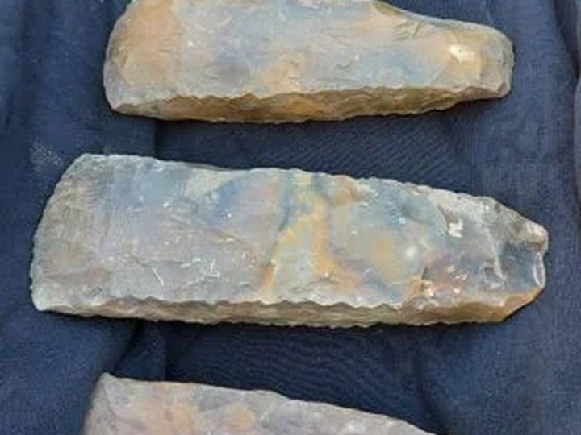

Stenen bijlen

Ga naar de plattegrond van offerschatten
Drie vuurstenen bijlen uit Collendoorn In Collendoorn, bij Hardenberg, vonden archeologen drie grote vuurstenen bijlen. Ze dateren uit de Trechterbekerperiode, tussen 3400 en 2750 voor Christus. De bijlen lagen dicht bij elkaar op de rand van een nat gebied. Er zijn geen sporen van bewoning of een graf gevonden. Daarom denken onderzoekers dat deze plek bewust is gekozen om de bijlen achter te laten. De bijlen zijn opvallend groot en komen waarschijnlijk uit Noord-Duitsland of Zuid-Scandinavië. Ze zijn te groot voor normaal gebruik en hebben geen gebruikssporen. Waarschijnlijk zijn ze gebruikt bij ceremonies en daarna als offer in het landschap gelegd. Zulke meervoudige vondsten zijn zeldzaam in Nederland.